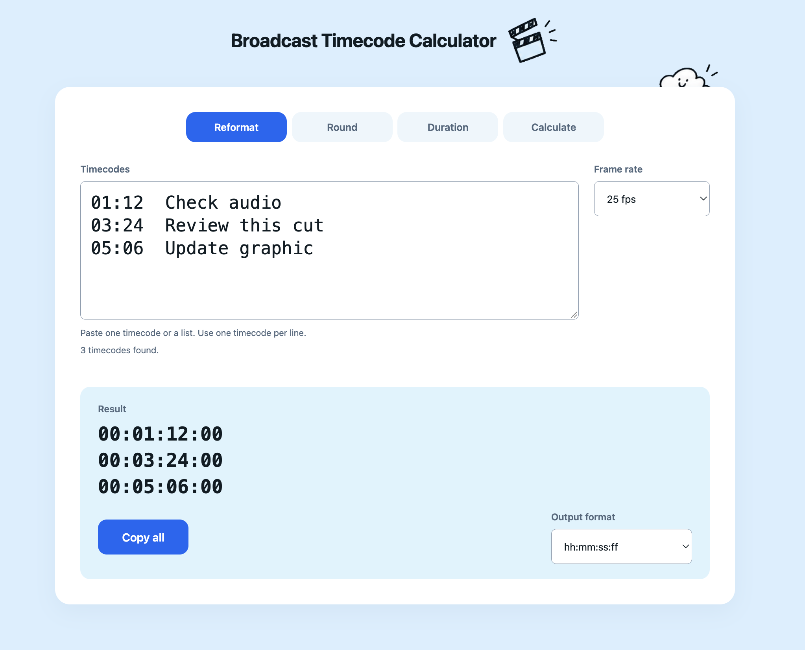
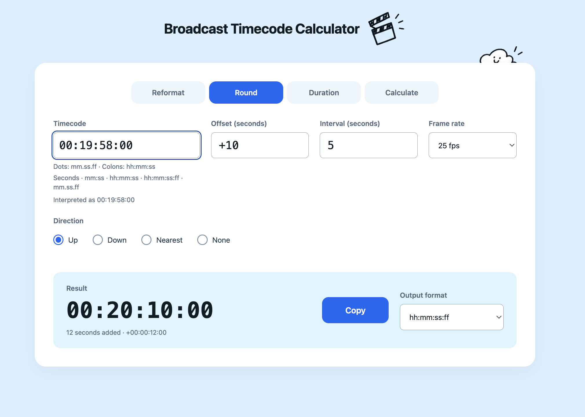
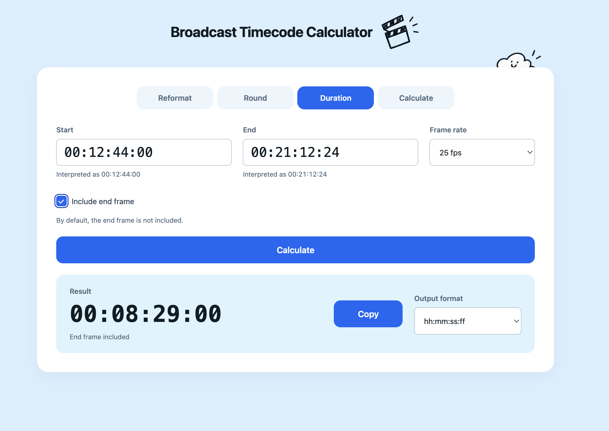

Built for broadcast workflows
24+1 brings everyday broadcast tasks into one timecode calculator: reformat timecodes in bulk, apply delivery offsets and rounding rules, calculate durations with or without the end frame, and add, subtract or sum time values. Each function is shaped by the practical needs of broadcast work.
01 / Reformat
Let’s speak the same timecode language.
Producers and editors sometimes speak different languages—even when they’re talking about the same moment. Reformat turns their timecodes into the format you need.
A long feedback list from your producer? Paste it into 24+1. It extracts the timecodes, leaves out the comments, and gives you a clean list to copy in one go.
Your editor says 00:12:12:12, but you only need minutes and seconds? Switch from hh:mm:ss:ff to mm:ss, and carry on with the conversation.
Batch input · Consistent output

02 / Round
Let 24+1 work out where the next segment starts.
It’s a busy Friday afternoon. Ten episodes need to be split into segments and exported. The last thing I want to do is repeatedly add 10 seconds to a timecode like 00:19:58:00, then round up to the next five-second mark.
That repetitive calculation is what first inspired 24+1. Round applies the delivery offset and rounding rule, including the awkward rollovers into the next minute. Let the calculator handle the arithmetic, and leave a little more time for a coffee and a final check.
Flexible offsets · Rounding controls

03 / Duration
From in and out to a clear duration.
Checking a segment length should be a quick step. Duration brings the start and end timecodes together in one focused view.
Choose the frame rate and whether to include the end frame, so the calculation matches the task.
Frame-rate selection · End-frame control

04 / Calculate
Keep the timing. Skip the working out.
Programme timings often involve more than one sum. Calculate provides a space to add and subtract time values or total a list of durations.
Work through an expression or bring several durations together, with a result ready to copy.
Expressions · Sum lists
00:12:00:00 + 00:04:12:00 − 00:00:30:00
00:15:42:00Ready to copy
In the workflow
Built around real production tasks.
This space will tell the story of the teams using 24+1, the tasks it supports and how their feedback has shaped the tool.
Teams & everyday use
Department names, confirmed usage and a short example from the workflow will appear here.
Have a timecode to work out?
Try the calculator